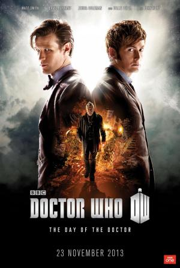

Doctor Who: El día del Doctor |
||
|---|---|---|
|  | Sinopsis: En la Tierra, el Undécimo Doctor y Clara descubren una peligrosa conspiración en una galería de arte. En 1562, el Décimo Doctor caza Zygons con la ayuda de la Reina Isabel. El último día de la Guerra del Tiempo, un hombre que ya no quiere llamarse "El Doctor" toma una terrible decisión: debe cometer un genocidio contra su propia raza para impedir la destrucción del Universo. Todos estos sucesos resultan estar conectados cuando tres encarnaciones del mismo Doctor deben enfrentarse al momento más terrible de sus vidas. |
Director:Nick Hurran Reparto:Matt Smith, David Tennant, John Hurt Año: 2013 Duracion:77 min con solo un episodio Pais:Reino Unido |
Criticas Profesionales:Cuervo NocturnoEste especial de aniversario muestra lo grande que es la serie moderna, así como también no deja de lado los aspectos clásicos y muestra en poco más de una hora de producción como contar una buena historia que deje contentos a los fanáticos, de una manera simple e inteligente. |
Trailer |
Obtener:AlquilarComprar |
Registrate/Iniciar Sesion